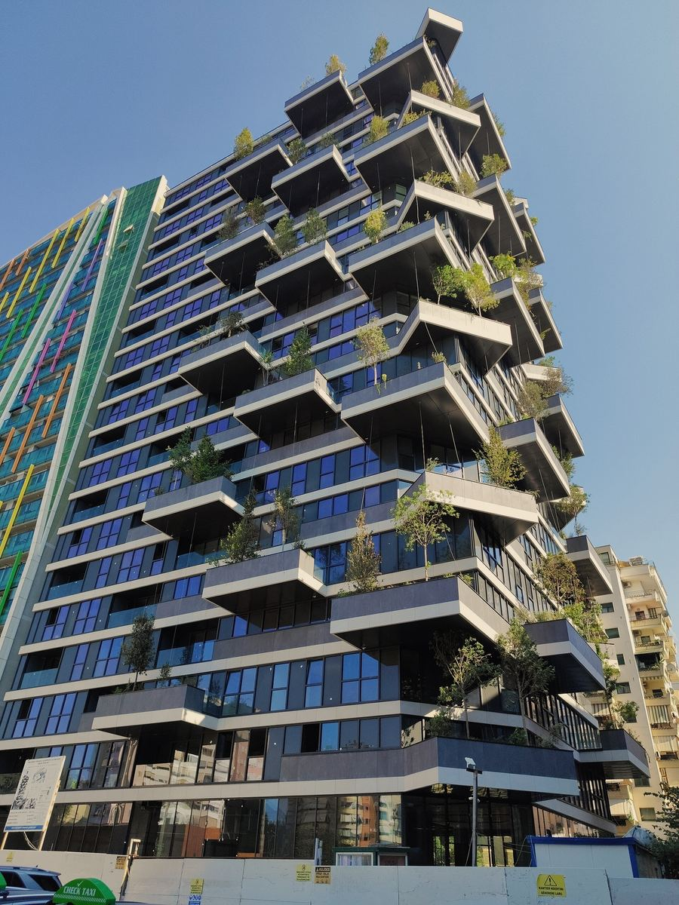
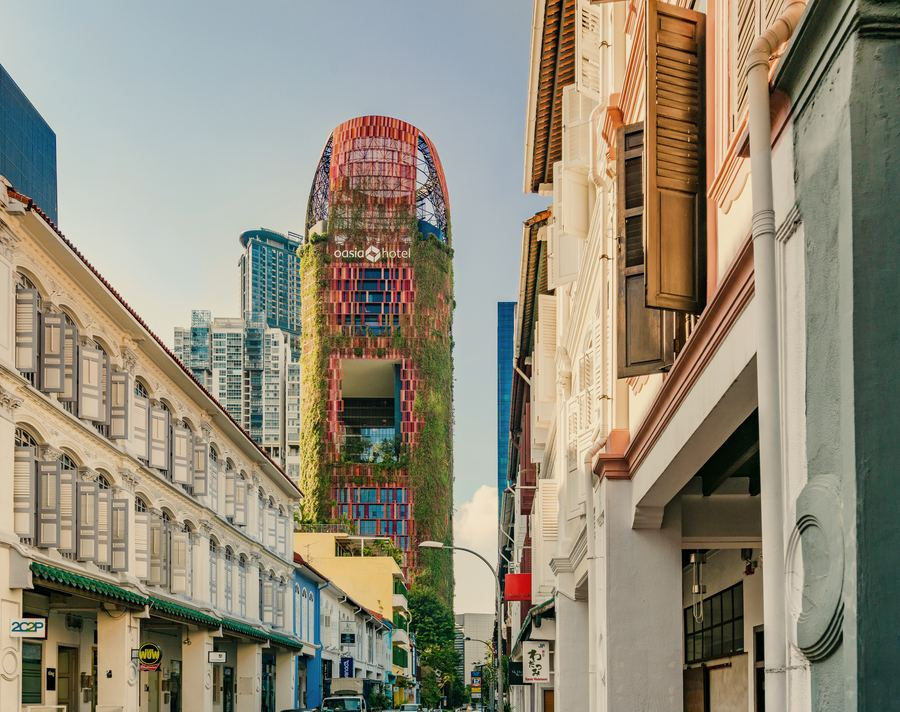

ADV-04Fictional advisory
Attend the Orientation Seminar in full.
It lasts ninety minutes and includes a short film. The film is excellent and deeply upsetting. Sit near the front.
Temporal riskClass I · SereneRead advisory

Earth · 2189 CE 41.3275° N, 19.8187° E
A metropolis that learned to give back more than it takes.
The journey
In 2189 the city is a patient work of repair. Rivers run where roads once cut them. Every roof is a field, every facade a habitat. Public life has returned to the streets because there is, finally, enough clean air to stay out in.
Our Class I rating is deserved: this is the one destination where we worry mostly about your enjoyment. You will eat at public kitchens, borrow tools from the seed-and-tool library, and join an evening river-restoration shift with neighbours who will insist on learning your name.
All of it is imagined. We offer it as an itinerary for hope, which seems, on balance, a worthy thing for a tourism board to sell.
Fact & fiction
Imagined. A story about tomorrow, not a prediction. We keep the two columns separate on purpose.
Context
The fiction
Sample itinerary
A representative plan. Final timings are fixed at your pre-departure briefing, and the Board reserves the right to be surprised.
Glide into the city on a tram you cannot hear. Someone is already waving at you from a balcony garden.
A slow ascent through planted balconies where residents trade seedlings and advice.
Share a long table with strangers. You will be asked to peel something.
Join the neighbourhood’s evening restoration of the river, in borrowed boots.
You will be gifted a seed. Please declare it at the gate.
Gallery
Every photograph shows a real place or event as it is today. They stand in for what you will see; they are not pictures of the era itself.

Ready for 2189 CE?
Illustrative pricing from TC 11,300 per traveller. No real reservation or payment is made.